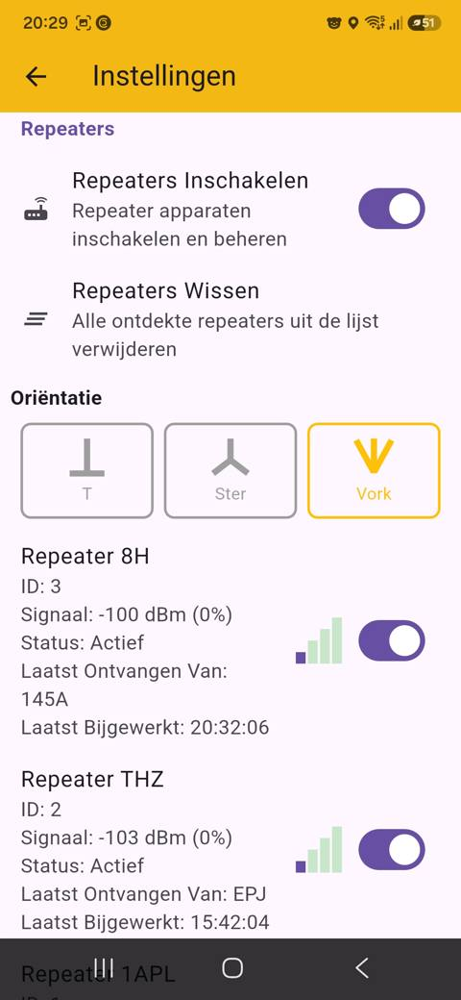
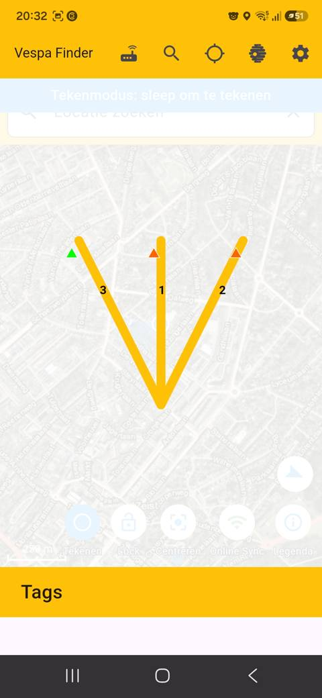

0 Wat is een zender en een repeater?
1 Vorm van het balletje
2 Kleur van de rand
3 Het nummer en de kleur van het balletje
Het nummer is niet de signaalsterkte. Het geeft de volgorde van de waarnemingen aan: 1 is de meest recente waarneming.
✅ Bevestigd via een handleiding van stopfrelons.ch (partner van Robor Nature): "het laatst waargenomen balletje krijgt nummer 1".
De vulkleur van het balletje (bijvoorbeeld rood of oranje) komt overeen met de markeerkleur die je zelf kiest wanneer je die hoornaar registreert bij "Nieuwe Voorspelling" (zie sectie 6 hieronder) — dus de kleur verf/stift waarmee de hoornaar fysiek gemarkeerd is. Zo herken je bij meerdere gezenderde hoornaars snel welk balletje bij welk exemplaar hoort. ✅ Bevestigd met screenshot van het registratiescherm.
Tik op een balletje om de details van die specifieke zender te openen (in de app zelf heet dit scherm "tag" — zie hieronder).
4 Signaalsterkte aflezen (na tikken op een zender)
Signaal: -100 dB (0%)
5 Repeaters opstellen en beheren

Bij Instellingen → Repeaters schakel je repeaters in en zie je per repeater: naam, ID, signaalsterkte (dBm), status, en van welke zender hij het laatst iets ontving.
Bij Oriëntatie kies je hoe je repeaters fysiek zijn opgesteld, zodat de app de peiling goed kan berekenen:
- T — repeaters in een T-vorm, bijvoorbeeld op een autodak
- Ster — repeaters in een stervorm (drie richtingen tegelijk)
- Vork — repeaters in een V-vorm, bijvoorbeeld op een fiets

Voorbeeld van een Vork-opstelling: drie repeaters (1, 2, 3) in V-vorm. De kleur van de driehoek geeft hier vermoedelijk de signaalkwaliteit van die specifieke repeater aan op dat moment (groen = sterker, oranje = zwakker) — nog te bevestigen.
6 Een hoornaar registreren (Nieuwe Voorspelling)

Tik en houd vast op de kaart (of op je huidige positie) om dit menu te openen. Kies "Nieuwe Voorspelling" om een gemarkeerde hoornaar te registreren.

Naam en de markeerkleur (Rood, Blauw, Goud, Groen, Oranje, Paars of Wit) — dit is de kleur verf/stift die je fysiek op de hoornaar hebt aangebracht, en wordt ook de vulkleur van het balletje op de kaart. Daaronder vul je de positie van de wiekpot (breedte-/lengtegraad) in, met knoppen om je huidige positie te gebruiken of te plakken.

Vervolgens meet je de terugkeertijd (met start/reset-knop, afstand wordt automatisch berekend), de vliegrichting (kompas), en optioneel het gewicht (mg) en de buitentemperatuur (°C).
7 Online Sync

Met Online Sync aan deelt je telefoon zenderlocaties in real-time met andere apparaten in je zoekteam — en ontvang je ook hun waarnemingen. Dit is de reden dat je balletjes met een blauwe rand kunt zien (zie sectie 2): die komen van een teamgenoot, niet van je eigen telefoon.